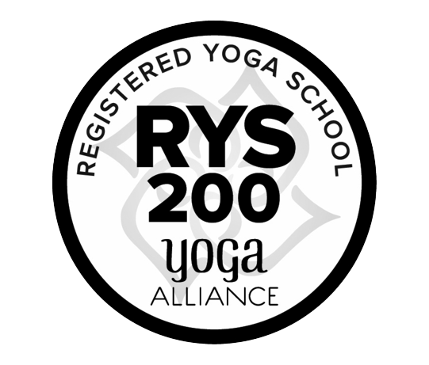

Humble Warrior
Trips to the Self
Trips to the Self

Humble Warrior, or Virabhdrasana in Sanskrit, is a pose named after Virabhadra, a powerful warrior in Hindu mythology. Vira means hero and bradra means friend. This warrior represents the destruction of evil, ignorance and delusion.
We named our business Humble Warrior because a warrior, to us, represents strength and bravery… and a Humble Warrior is a warrior who knows where they come from.
To us, yoga is not just a physical practice on a mat. It is meant to be something you take with you, and shared with your community.
We met in the park. Humble Warrior evolved organically from our mutual reverence for the practice, and also our insatiable love of play. It is our belief that these are not incompatible. That everyone can enjoy their practice, and find empowerment in their own body, in their own way. Our goals include inclusivity, equality, and equity for all ages, all gender identities, all colors, all ethnicities, all orientations. We challenge you to take an adventure, a trip to the Self.
Train with us in India and New York to become an RYT-200 yoga teacher. A hybrid (in-person and online) teacher training with Shane Allen and Lillian Cuthbert, as well as guest teachers Sangeeta Vallabhan, Tonie Warner, Joelle Ng, and Aksharanand A S.
Training will take place virtually and in New York, weekends from September 2024 to January 2025, and will conclude with a weeklong immersion in Kerala, India.
September 14, 2024 - January 11, 2025
Fridays 5-7pm
Saturdays 2-6pm
Classes to take place virtually, except for the following Saturdays:
• September 14, 2024
• October 12, 2024
• November 9, 2024
• December 14, 2024
• January 11, 2025
In-person classes will be held at House of Flow in Brooklyn. All classes will be recorded and recordings will be made available to students. No classes on the weekends of November 29/30 or December 27/28.
January 20-27, 2025
The training will conclude with a weeklong immersion at the Purna Rivera ashram and hotel in Munnar, Kerala State, in southern India, integrating everything you have learned up until that point.
Shared accomodation and daily breakfast and dinner in Munnar are included. Airfare not included.

Sangeeta Vallabhan
Sangeeta has been studying movement since she was young, first through dance and then yoga. She has been teaching yoga in New York City since 2003. She has studied vinyasa, prenatal, restorative, advanced vinyasa, trauma informed yoga and yoga philosophy. In total she has studied over 1200 hours. She trains teachers at the 200hr and 300hr levels. She has taught yoga nationally and internationally; she has also been featured in Yoga Journal, Health Magazine and other online publications. Pursuing her studies in trauma informed yoga enabled her to better face her own traumatic experiences and her recovery has inspired her to help others. In 2019, Sangeeta started training students in trauma informed yoga with her own training, Solemarch - Yoga for Trauma Yoga Teacher Training. In 2020, she founded a non-profit, The Practice Coalition, an organization dedicated to supporting survivors of domestic and sexual violence with yoga for trauma. Sangeeta aims to help people feel heard, seen, comfortable and empowered within themselves.

Tonie Warner
Tonie found empowerment and refuge in Yoga in over 15 years of practice and teaching. She believes that Yoga is a liberation practice, dependent on the liberation of BIPOC. She did not see this tenet being upheld in dominant studio culture, and with the desire to extend her practice in alignment with her beliefs, she founded Yuja Soul, a dedicated space offering Yoga for Black Women. In addition to Yuja Soul, Tonie is also a Principal at The Practice Coalition, a non-profit organization that offers Yoga for trauma to survivors of domestic and sexual violence.
Tonie is currently a full-time Yoga Teacher and Teacher Trainer, who can be found leading practice through Brooklyn and New York City. Her classes are inspired by the Advaita Vedanta philosophy of non-duality, and are known for their physical and mental challenge, and open brave space for inquiry and experiencing at the intersections of Yoga philosophy, social justice and healing justice. These inspirations are also threaded into her Prenatal Yoga offerings and post-natal offering, Parents and Baby.
Tonie is grateful for her teachers, having completed her 200 and 300 hour trainings at Sonic Yoga, her Prenatal Yoga training with Clare Ryan through Yoga Vida and Somatics and Attachment Therapy with The Embody Lab. Tonie carries the teachings of her ancestors and elders, and is inspired by the thought and work of bell hooks, Toni Morrison, adrienne maree brown, Tias Little and Gabor Maté.
Joelle Ng
Drawing from over a decade of experience, Joelle is an Ayurvedic Practitioner, Yoga, and Meditation Instructor committed to empowering individuals on their paths to self-discovery, empowerment and well-being balance.
Joelle's Ayurvedic approach focuses on tailoring healing practices to the unique needs and goals of each individual. By carefully assessing each person's doshic constitution and health objectives, Joelle crafts personalized daily routines that integrate simple yet effective Ayurvedic methods. These tailored approaches aim to support the body's natural doshic balance for optimal health.
From the heart, Joelle's signature yoga and meditation classes are designed to guide individuals on a soulful journey, helping them harness their inner strength, deepen self-awareness, and connect with their essence. Participants emerge from each session feeling revitalized and enriched.
Aksharanand A S
Aksharanand A S holds an Advanced Teacher Training Certificate (ATTC) in Sivananda Yoga studies and studies of Vedanta (Non-dual Philosophy). Achu has a special talent for training Yoga students, with his charismatic personality and warm presence. He has extensive experience in Hatha Yoga practice and Yoga philosophy. Achu comes from a well established family of yoga teachers in Cochin, Kerala and his mother and father have been teaching Hatha Yoga at their shala for the last 30 years.
Payment plan available. Price includes shared accomodation and daily breakfast and dinner during the India-based portion of the training. Airfare not included.
Upon successful completion of the training, you will be eligible to register with Yoga Alliance as an RYT-200 Yoga Teacher.
Please contact us for more info, or to set up a call with us!
A cultural immersions and nature retreat in the southern Indian mountains, the birthplace of Ayurveda.
We will spend a week in the lush green hills of Munnar, Kerala, India. Every day will include two yoga classes, pranayama, meditation, yoga philosophy discussions and journaling. The itinerary also includes hiking to nearby waterfalls, as well as expeditions to Kolukkumala, the highest tea plantation in the world, and an evening excursion to a nearby cultural center to see a Kathakali show. There will also be opportunities for ayurvedic massages.
Price includes room, two meals a day, and all activities. Travel to and from the retreat from Ft. Kochi is included; however, airfare to Ft. Kochi is not. All rooms are shared accommodations with en-suite bathroms. Price for a shared room: $2500. Early bird pricing, $2000, up to September 1, 2024.
Get in touch for more info!
Shane is an experienced yoga teacher (E-RYT) with a speciality in meridian yoga therapy, a certified Pilates mat instructor, and an Acu Detox Specialist (ADS) working in harm reduction for the city's most overlooked neighbors. Additionally, he’s continuing his study at Hunter College as well as the AASECT recognized Sexual Health Alliance (SC). Shane originally found his way to yoga as a way to cope with chronic panic attacks. Having just moved to the city for acting school, he’d learned the body tells a story. Yoga taught him to listen. In his classes, Shane hopes to charm his students to meet challenges with honor, humility, and humor.
For upcoming work shops, retreats, and more you can follow him at:

Lillian found yoga at an early age and immediately recognized its many benefits. She fell in love with the practice and the way it enhanced her life both physically and mentally. She completed the 200-hour training at Yoga Vida in 2018 and further studied under the guidance of her mentor, Sangeeta Vallabhan. She currently has a E-RYT 500 Yoga Alliance designation.
Lillian’s classes are athletic and challenging, yet balanced, safe, and accessible to all. She believes that a mindful yoga practice extends beyond the mat and infuses everything we do. With that in mind, Lillian aims to have people leave her classes feeling stronger, calmer, and more connected to the world around them.
In 2018, Lillian climbed Mount Everest, completing the Seven Summits. She has run the New York Marathon ten times, has qualified for and run the Boston Marathon twice. She is the treasurer of The Practice Coalition, a non-profit dedicated to providing yoga for trauma to survivors of domestic and sexual violence and to taking care of the teachers who offer it. She is also the co-founder, with Shane Allen, of Humble Warrior, through which she co-organizes and co-leads retreats and teacher trainings around the globe. She holds a PhD in Electrical Engineering.
"Imagine going on a fun trip with your best friends! That’s the feeling you get on Humble Warrior’s yoga retreats thanks to Shane and Lillian’s intentional programming. Add delicious food and well-curated activities, and it’s an experience not to be missed." -- Anush
"These Humble warriors created an all-inclusive travel experience with yoga/meditation, excellent food, site-seeing and adventure! In India, we went white water rafting on the Ganges, visited the Taj Mahal and walked local areas and shopped. Lillian & Shane are a perfect complement to each other and are well organized and thoughtful. I was able to relax in a foreign country knowing I was in good hands." -- Wendy
"I am more of a solo traveler and don’t generally go on group trips. But knowing Lillian and Shane, I knew it would be a good time, and I wasn’t disappointed! The week we spent in Colombia was incredible. Great yoga and meditation, but also a fun week of activities and adventuring. The crowd they attract is also diverse and fun, and I look forward to going on another one of their retreats!" -- Martin